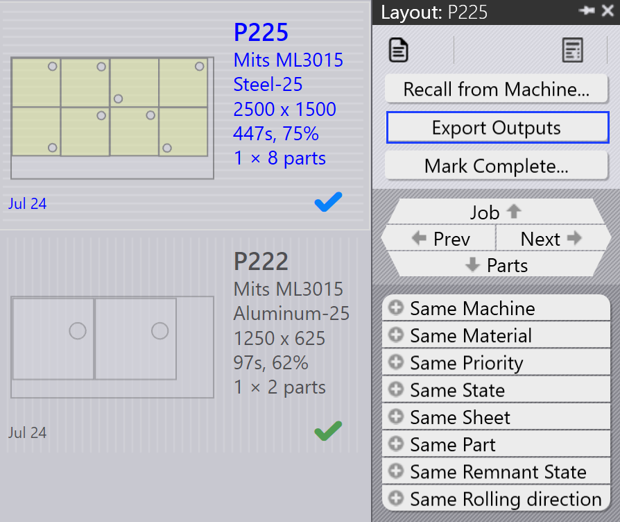

Πίνακας διάταξης
Αυτή η ενότητα εξηγεί τις ενέργειες που σχετίζονται με τη διάταξη όπως Αποστολή στη μηχανή…, Ανάκληση από τη μηχανή…, Εξαγωγή αποτελεσμάτων, Σήμανση ως ολοκληρωμένη…, Προσθήκη εξαρτημάτων…, Προσαρμογή/Συμπίεση…, Διαχωρισμός διατάξεων… και άλλες επιλογές που χρησιμοποιούνται για τη διαχείριση παρουσιών διάταξης.

|
|


Αποστολή στη μηχανή…
-
Όταν μια τοποθέτηση είναι έτοιμη (γεμάτη ή επείγουσα), μπορείτε να την στείλετε στο μηχάνημα.
-
Κάντε δεξί κλικ στην τοποθέτηση και επιλέξτε Αποστολή στη μηχανή….
-
Ένας φάκελος δημιουργείται αυτόματα, με το όνομα της τοποθέτησης.
-
Τα αρχεία εξόδου (fxlyt, NC, report, csv) εξάγονται στην τοποθεσία εξόδου JOB.
-
Οι τοποθετήσεις που στάλθηκαν στο μηχάνημα εμφανίζονται με μπλε σημάδι ελέγχου.

| Μόλις απελευθερωθούν, αυτές οι τοποθετήσεις δεν επαναδοκιμάζονται για επανασυσκευασία. |
Ανάκληση από τη μηχανή…
-
Εάν η έξοδος χρειάζεται επικύρωση ή ενημέρωση (για παράδειγμα, προσθήκη περισσότερων εξαρτημάτων):
-
Κάντε δεξί κλικ στην εξαγόμενη διάταξη.
-
Επιλέξτε Ανάκληση από τη μηχανή….
-
-
Τα αρχεία εξόδου και ο φάκελος (fxlyt, NC, report, csv) διαγράφονται.
-
Η τοποθέτηση γίνεται ξανά επεξεργάσιμη.
-
Μπορείτε να κάνετε αλλαγές και να την στείλετε ξανά στο μηχάνημα.

Εξαγωγή αποτελεσμάτων
-
Κάντε δεξί κλικ σε οποιαδήποτε διάταξη (τοποθέτηση) που έχει σταλεί στο μηχάνημα και κάντε κλικ στο Εξαγωγή αποτελεσμάτων.

-
Η επιλογή Export Outputs εξάγει τα αρχεία NC, Report και Layout στους αντίστοιχους φακέλους εξόδου μηχανήματος.
-
Αυτή η επιλογή αναδημιουργεί το αρχείο NC με τις τρέχουσες ρυθμίσεις μονάδων για τη διάταξη.
| Το Export Outputs δεν είναι διαθέσιμο για Διατάξεις που είναι Ολοκληρωμένες και Διατάξεις που βρίσκονται σε αναμονή στην ουρά για επανασυσκευασία. |
Σήμανση ως ολοκληρωμένο
-
Μόλις η τοποθέτηση υποβληθεί σε επεξεργασία στο μηχάνημα, κάντε δεξί κλικ στην τοποθέτηση και επιλέξτε Σήμανση ως ολοκληρωμένη….
-
Μπορείτε να επιλέξετε πολλαπλές τοποθετήσεις και να τις σημειώσετε ως ολοκληρωμένες ταυτόχρονα.
-
Όταν μια τοποθέτηση σημειώνεται ως ολοκληρωμένη:
-
Γκριζάρει, μετακινείται στο τέλος της λίστας και εμφανίζεται με πράσινο σημάδι ελέγχου.
-
Η διάταξη αφαιρείται από τη λίστα ενεργών διατάξεων.
-
Οι καταστάσεις εξαρτημάτων και εργασιών ενημερώνονται και οι επεξεργασμένες ποσότητες μετακινούνται στην ολοκληρωμένη κατάσταση.
-
Τα αρχεία εξόδου για αυτή τη διάταξη αφαιρούνται από την τοποθεσία εξόδου του μηχανήματος για να αποφευχθεί η διπλή χρήση.

-
Προσθήκη εξαρτημάτων…

-
Χρησιμοποιήστε αυτήν την επιλογή για να προσθέσετε περισσότερα εξαρτήματα σε μια σχετικά κακά συσκευασμένη διάταξη. Όπως η Διαδραστική Τοποθέτηση, αυτή είναι μια επιλογή με οδηγό και μπορεί να χρησιμοποιηθεί σε μια μεμονωμένη ή πολλαπλές διατάξεις ταυτόχρονα.
-
Το TruSmartCAM τοποθετεί τον Οδηγό επανασυσκευασίας Διάταξης στην κύρια περιοχή εργασίας όταν χρησιμοποιείται αυτή η επιλογή. Κρατήστε πατημένο το πλήκτρο Ctrl και επιλέξτε ένα ή περισσότερα εξαρτήματα που θα συσκευαστούν στη διάταξη(εις) και πατήστε Επόμενο.

-
Τα επιλεγμένα εξαρτήματα εμφανίζονται στο επόμενο βήμα με επεξεργάσιμη στήλη ποσότητας. Ενημερώστε τις ποσότητες εξαρτημάτων εάν χρειάζεται στο πεδίο Update Qty. Κάντε κλικ στο Επόμενο για να προχωρήσετε στην τοποθέτηση. Σημειώστε ότι οι ποσότητες μπορούν μόνο να αυξηθούν, όχι να μειωθούν.

-
Όλες οι διατάξεις τοποθετούνται ξεχωριστά και τα τοποθετημένα αποτελέσματα εμφανίζονται με τα νέα συσκευασμένα εξαρτήματα τοποθετημένα σε αυτές. Η επιλογή της διάταξης εμφανίζει όλα τα υπάρχοντα εξαρτήματα διάταξης. Το αποτέλεσμα απορρίπτεται αυτόματα εάν κανένα νέο εξάρτημα δεν τοποθετηθεί κατά την επανασυσκευασία. Μια διάταξη με πολλαπλά αντίγραφα μπορεί να έχει ως αποτέλεσμα διαφορετικά μοτίβα μετά την επανασυσκευασία.

Προσαρμογή/Συμπίεση…
-
Αυτή η εντολή με οδηγό μπορεί να χρησιμοποιηθεί για να προσαρμόσει μια διάταξη από ένα μηχάνημα σε άλλο όταν το αρχικό μηχάνημα δεν λειτουργεί ή όταν το φορτίο εργασίας του μηχανήματος χρειάζεται να εξισορροπηθεί.

-
Μπορεί να χρησιμοποιηθεί όταν το φύλλο που είχε σχεδιαστεί δεν υπάρχει σε απόθεμα και η διάταξη χρειάζεται να επανασχεδιαστεί σε άλλο διαθέσιμο φύλλο.
-
Μπορείτε να συγχωνεύσετε διατάξεις που είναι συσκευασμένες σε μικρότερα φύλλα σε μεγαλύτερα φύλλα για να χρησιμοποιήσετε το υλικό πιο αποτελεσματικά.
-
Μπορείτε να χωρίσετε διατάξεις που είναι συσκευασμένες σε μεγαλύτερα φύλλα σε μικρότερα φύλλα εάν τα μεγάλα αποθέματα φύλλων δεν είναι διαθέσιμα.
-
Μπορείτε να βελτιώσετε την αποδοτικότητα συσκευασίας πολλαπλών διατάξεων (ακόμη και από διαφορετικά μηχανήματα) συγχωνεύοντάς τες μαζί.
-
Για να το χρησιμοποιήσετε, επιλέξτε μία ή περισσότερες διατάξεις και κάντε κλικ στο Προσαρμογή/Συμπίεση… για να ανοίξετε τον οδηγό στην περιοχή εργασίας.

-
Το αριστερό παράθυρο εμφανίζει όλες τις επιλεγμένες διατάξεις και το παράθυρο Parts εμφανίζει τα εξαρτήματα της διάταξης.

-
Επιλέξτε το μηχάνημα στόχο και το υλικό φύλλου, στη συνέχεια κάντε κλικ στο Επόμενο για να εκτελέσετε την επανατοποθέτηση.
-
Τα νέα αποτελέσματα τοποθέτησης εμφανίζονται στο παράθυρο αποτελεσμάτων.

-
Κάντε κλικ στο Επόμενο για να αποθηκεύσετε την προσαρμοσμένη ή συμπιεσμένη διάταξη.

Διαχωρισμός διάταξης
Η επιλογή Διαχωρισμός διατάξεων… σας επιτρέπει να διαχωρίσετε μια υπάρχουσα διάταξη σε πολλαπλές διατάξεις τροποποιώντας τις ποσότητες, χωρίς την ανάγκη να επαναληφθεί η εργαλειοποίηση ή η τοποθέτηση.
Αυτή η δυνατότητα είναι ιδιαίτερα χρήσιμη στα ακόλουθα σενάρια:
-
Όταν χρειάζεται να παράγετε ένα τμήμα της συνολικής ποσότητας άμεσα ενώ προγραμματίζετε την υπόλοιπη ποσότητα για μεταγενέστερη παραγωγή.
-
Όταν οι απαιτήσεις παραγωγής πρέπει να κατανεμηθούν σε πολλαπλές βάρδιες ή ημέρες για βελτιστοποίηση της ροής εργασίας και της χρήσης πόρων.
-
Όταν ένα συγκεκριμένο μηχάνημα είναι προσωρινά μη διαθέσιμο ή κατειλημμένο και χρειάζεται να προσαρμόσετε τη διάταξη για να εξυπηρετήσετε τους τρέχοντες περιορισμούς παραγωγής.
Για να διαχωρίσετε μια διάταξη, εκτελέστε τα ακόλουθα βήματα:
-
Στην προβολή Διατάξεων, επιλέξτε την απαιτούμενη διάταξη.

-
Κάντε κλικ στο Διαχωρισμός διατάξεων….

-
Εισαγάγετε την απαιτούμενη τιμή στο Νέα αντίγραφα.

-
Κάντε κλικ στο OK.

Η επιλεγμένη διάταξη τώρα διαχωρίζεται σε δύο διατάξεις με προσαρμοσμένες ποσότητες.